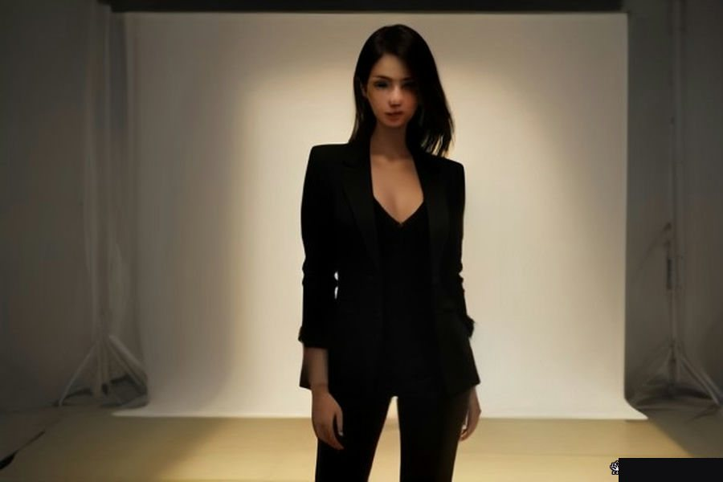

Glossaire & Schémas
Le vocabulaire de la lumière, expliqué simplement. Survolez une fiche pour la voir s'animer, puis étudiez les schémas : le flash, le sujet, et ce que chaque lumière vient dessiner.
La source principale qui éclaire le sujet et définit la direction de la lumière. C'est elle qui donne le modelé et les ombres.
Une source plus douce qui éclaire les ombres créées par la key light, sans les effacer complètement.
Placée derrière le sujet, elle dessine son contour et le détache du fond. Aussi appelée « backlight ».
Une boîte recouverte de tissu diffusant qui adoucit la lumière du flash et produit des ombres douces.
Une boîte longue et fine qui crée une bande de lumière étroite, idéale pour souligner un profil ou un reflet.
Un diffuseur rond et peu coûteux qui élargit la lumière. Avec grille, il devient plus directionnel.
Un accessoire en forme de cône qui resserre le faisceau en un spot précis, pour éclairer une petite zone.
Une grille en alvéoles qui canalise la lumière et évite qu'elle ne se disperse sur le fond ou les côtés.
Une feuille colorée placée devant le flash pour colorer la lumière ou corriger sa température (CTO, CTB).
La différence d'intensité entre deux sources, par exemple 1:2 ou 1:4. Il contrôle le contraste de l'image.
L'intensité diminue avec le carré de la distance : éloigner le flash de deux fois divise sa lumière par quatre.
Un appareil qui mesure la lumière du flash pour régler l'exposition avec précision, sans tâtonner.
Schémas de lumière
Le flash, le sujet, et la direction de la lumière — survolez pour révéler les faisceaux.

I · Un flash
II · Deux flashs

III · Trois flashs
